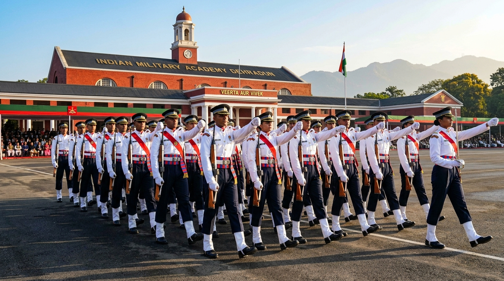

Women in the Indian Army
A documented study of the expanding avenues for women officers and soldiers: from nursing services and Short Service Commissions to Permanent Commission, command postings, and NDA admission.
From Restricted Entry to Command Leadership
Women have served in the Indian armed forces since the late 19th century through the Military Nursing Service (MNS), which received officer rank in 1943. However, regular entry into other branches was initiated in 1992 under the Women Special Entry Scheme (WSES), originally limited to a five-year non-extendable tenure in select non-combat roles.
Over three decades, through statutory reviews, progressive military policy, and landmark rulings by the Supreme Court of India, women officers have transitioned from temporary contracts to Permanent Commission (PC). Today, women lead independent units as Commanding Officers (Colonels), fly combat helicopters in Army Aviation, operate artillery batteries, and enter through the National Defence Academy alongside male peers.

Milestones in Women's Military Induction
Key decisions, judicial judgements, and institutional expansions verified through parliamentary and court records.
Women Special Entry Scheme (WSES)
The Government of India approved the induction of women as Short Service Commission (SSC) officers for an initial five-year tenure in select non-combat support branches: Army Postal Service, Judge Advocate General (JAG), Army Education Corps (AEC), Corps of Signals, Corps of Engineers, and Army Ordnance Corps. Priya Jhingan became the first woman cadet registered at OTA Chennai.
Grant of Permanent Commission in JAG & AEC
The Ministry of Defence announced that women officers joining through Short Service Commission in the Judge Advocate General (JAG) department and Army Education Corps (AEC) would be eligible for Permanent Commission, establishing the first formal pathway to full pensionable career service.
Supreme Court Judgement: Secretary, MoD v. Babita Puniya
In a historic decision delivered by Justices D.Y. Chandrachud and Ajay Rastogi (2020 SCC OnLine SC 200), the Supreme Court of India directed the Union Government to grant Permanent Commission to all serving Short Service Commission women officers in 10 arms and services, irrespective of their length of service. The Court held that physiological differences cannot be used to deny equal constitutional opportunity under Article 14, and affirmed women officers' eligibility for command appointments.
National Defence Academy (NDA) Opened to Women
Acting on a public interest petition (Kush Kalra v. Union of India), the Supreme Court of India passed an interim order permitting female candidates to sit for the UPSC National Defence Academy entrance examination. In November 2021, women appeared for the exam, and the first cohort joined the NDA campus in Khadakwasla in 2022 to train alongside male cadets over a three-year military and academic curriculum.
Aviation, Artillery & Soldier Cadres
The Indian Army systematically expanded operational openings:
• Enlisted Soldiers: The Corps of Military Police (CMP) inducted its first batch of women soldiers in May 2021 after 61 weeks of rigorous recruit training at CMP Centre & School Bengaluru.
• Army Aviation: In May 2022, Captain Abhilasha Barak graduated as the Indian Army's first woman combat aviator, qualifying as a helicopter pilot.
• Regiment of Artillery: In April 2023, the first batch of five women officers was commissioned into the Regiment of Artillery, marking their official entry into combat support firepower arms.
Branches Currently Open to Women Officers
Based on official government and court policies, women currently serve in ten arms and services, plus Army Aviation, Artillery, and the Medical/Dental/Nursing services.
Technical & Tactical Arms
- Regiment of Artillery
- Corps of Engineers (Sappers)
- Corps of Signals (Cyber & Comms)
- Army Air Defence (AAD)
- Army Aviation Corps (Helicopter Pilots)
- Corps of Electronics & Mechanical Engineers (EME)
Services & Staff
- Army Service Corps (ASC)
- Army Ordnance Corps (AOC)
- Intelligence Corps
- Judge Advocate General (JAG - Legal)
- Army Education Corps (AEC)
- Corps of Military Police (CMP)
Medical Branches
- Army Medical Corps (AMC - Doctors)
- Army Dental Corps (ADC)
- Military Nursing Service (MNS)
- Specialist field surgical & trauma teams